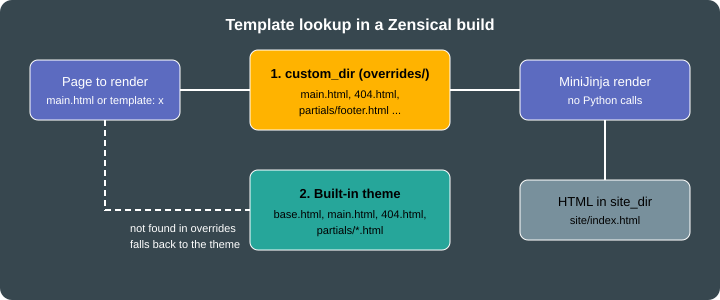

Theming and Customization
|
This content was generated with the assistance of AI and should be verified against the official documentation before being relied on in production. |
This page was written against Zensical 0.0.72 (released 2026-10-23, still marked alpha on PyPI) and checked on
2026-10-26. It covers the customization layers of a Zensical site, from the cheapest (a few lines in zensical.toml) to
the most invasive (template overrides). Every listing that builds a site was run against a copy of the Pocket Units
documentation project with Zensical 0.0.72 and Python 3.13.
Customization layers
Zensical keeps the visual design of Material for MkDocs, so the settings and the CSS variables keep their md- names.
The layers below are ordered from least to most effort. Prefer the earliest layer that does the job, because every
override you own is a file that must be compared with the built-in one after an upgrade.
| Layer | Where | Typical use |
|---|---|---|
Theme settings |
|
Palette, fonts, feature flags, language, logo |
Extra assets |
|
Custom colors, a self-hosted font, small scripts |
Block overrides |
|
Announcement bar, extra |
Partial overrides |
|
Replace the footer copyright, the header or the table of contents |
Custom pages and error pages |
|
Landing pages chosen with the |

Figure: a template named in a build is looked up in custom_dir first and in the built-in theme second, and both are
rendered by MiniJinja without a Python interpreter.
The classic variant keeps the Material for MkDocs look, and modern is the other variant (theme.variant, see
Migrating from Material for MkDocs). Where
this page says that a setting colors "the header", the official colors page states that primary color applies to the
header and sidebar in the classic variant.
Color palette and schemes
The palette lives in [project.theme.palette]. It has three independent pieces: the scheme, the primary color and the
accent color.
-
scheme:defaultis the light scheme andslateis the dark scheme. -
primary: used for text links and, in theclassicvariant, for the header and the sidebar. Allowed names are red, pink, purple, deep purple, indigo, blue, light blue, cyan, teal, green, light green, lime, yellow, amber, orange, deep orange, brown, grey, blue grey, black and white, pluscustomfor your own value. -
accent: used for hovered links, buttons and scrollbars. The names are the same as forprimary, without brown, grey, blue grey, black and white.
[project.theme.palette]
scheme = "slate"
primary = "indigo"
accent = "amber"Source: Zensical docs: Colors
Light and dark toggle
When palette is written as a list ([[project.theme.palette]], an array of tables), each entry is one selectable
palette and the header shows a toggle button. toggle.icon is an icon path from the bundled icon sets (the docs use
lucide/sun, lucide/moon, lucide/toggle-left, lucide/toggle-right and lucide/sun-moon) and toggle.name is the
accessible name, shown as a tooltip. The media key holds a media query. Entries with (prefers-color-scheme: light)
and (prefers-color-scheme: dark) follow the operating system until the visitor uses the toggle, and the bare query
(prefers-color-scheme) adds an "automatic" entry that follows the system.
[[project.theme.palette]]
media = "(prefers-color-scheme)"
toggle.icon = "lucide/sun-moon"
toggle.name = "Switch to light mode"
[[project.theme.palette]]
media = "(prefers-color-scheme: light)"
scheme = "default"
primary = "indigo"
accent = "amber"
toggle.icon = "lucide/sun"
toggle.name = "Switch to dark mode"
[[project.theme.palette]]
media = "(prefers-color-scheme: dark)"
scheme = "slate"
primary = "indigo"
accent = "amber"
toggle.icon = "lucide/moon"
toggle.name = "Switch to system preference"Source: Zensical docs: Colors
The Pocket Units build used the two-entry variant (light and dark, without the automatic entry). The generated page
carried data-md-color-scheme, data-md-color-primary, data-md-color-accent and data-md-color-media attributes,
for example data-md-color-scheme="default", data-md-color-primary="indigo" and data-md-color-accent="amber", and
both media queries appeared in the markup so that the toggle can switch between them.
Custom colors and schemes
Setting primary = "custom" hands the color to your CSS. Register a stylesheet in extra_css and set the Material
variables. The selector :root > * makes the rule win over the theme’s own declarations.
:root > * {
--md-primary-fg-color: #3f51b5;
--md-primary-fg-color--light: #7986cb;
--md-primary-fg-color--dark: #303f9f;
}
.pocket-badge {
display: inline-block;
padding: 0 0.5em;
border-radius: 0.2em;
background: var(--md-accent-fg-color);
color: var(--md-accent-bg-color);
}Source: Zensical docs: Colors
A named scheme is a CSS rule on [data-md-color-scheme="name"], selected with scheme = "name". The docs example
sets the primary variables inside [data-md-color-scheme="youtube"] and then theme.palette.scheme = "youtube". The
dark scheme’s hue can be tuned with --md-hue (0 to 360) on [data-md-color-scheme="slate"].
Fonts
Zensical loads two Google Fonts families by default, selected by name in [project.theme]:
[project.theme]
font.text = "Inter"
font.code = "JetBrains Mono"Source: Zensical docs: Fonts
font.text is the regular font and font.code the monospaced font. The official page does not state the default
families. In the Pocket Units build these two settings produced a fonts.googleapis.com stylesheet link for both
families (Inter weights 300, 400, 500 and 700 with italics, JetBrains Mono 400 and 700 with italics), plus a
<style> block that sets --md-text-font and --md-code-font.
To meet privacy requirements, set font = false. The Google Fonts link is then not rendered and the site uses system
fonts. In the Pocket Units build with font = false the page contained no googleapis reference and no
--md-text-font declaration.
[project.theme]
font = falseSource: Zensical docs: Fonts
Self-hosted fonts
To use your own font files, disable Google Fonts, declare the face in a stylesheet listed in extra_css, and apply it
through the CSS variables rather than font-family, because overriding font-family removes the system font fallback.
@font-face {
font-family: "Pocket Sans";
src: url("../fonts/pocket-sans.woff2") format("woff2");
font-display: swap;
}
:root {
--md-text-font: "Pocket Sans";
}Source: Zensical docs: Fonts
This font example was not executed: it needs a font file, and the name Pocket Sans is a placeholder. Font files
placed under docs/ are copied to the site like other static files, so the relative url() must match their location
below the stylesheet.
Header and footer
Header
The header is controlled by feature flags in [project.theme]:
-
header.autohidehides the header while the visitor scrolls down. -
announce.dismissadds a button to close the announcement bar. The bar stays hidden until its content changes.
The announcement bar itself has no setting: it is the empty announce block of the base template, filled by a template
override (see Template overrides). The logo and the repository link are covered in
Diagrams, Math and Icons.
Footer
| Setting | Effect |
|---|---|
|
Previous and next page links at the bottom of every page |
|
Removes the previous and next links from that page |
|
Copyright text, may contain HTML entities such as |
|
Social links with |
|
Hides the "made with" notice that is shown by default |
[project]
copyright = "Copyright © 2026 Pocket Units contributors"
[project.theme]
features = ["header.autohide", "announce.dismiss", "navigation.footer"]
[project.extra]
generator = false
[[project.extra.social]]
icon = "fontawesome/brands/github"
link = "https://github.com/example/pocket-units"
name = "Pocket Units on GitHub"Source: Zensical docs: Footer
Social links need a link with a URI scheme (mailto: works) and an icon that is a path inside the bundled icon sets
(fontawesome/brands/github, fontawesome/brands/mastodon, fontawesome/solid/paper-plane, and so on). An icon path
that does not exist fails the build. Changing the GitHub icon to fontawesome/brands/nope in the Pocket Units project
produced this error:
RuntimeError: could not render include: error in "partials/footer.html" (in base.html:222): could not render include: error in "partials/social.html" (in partials/footer.html:52): template not found: tried to include non-existing template ".icons/fontawesome/brands/nope.svg" (in partials/social.html:24)
The official page asks users to keep the generator notice because it helps the project; the setting is nevertheless
supported. With the settings above, the built page contained the GitHub link with title="Pocket Units on GitHub", the
copyright text and no generator notice.
Extra CSS and JavaScript
Put the files under docs/ and list them with paths relative to docs_dir:
[project]
extra_css = ["stylesheets/extra.css"]
extra_javascript = ["javascripts/extra.js"]Source: Zensical docs: Customization
The same two keys exist at the top level of mkdocs.yml. The build copied both files to site/stylesheets/extra.css
and site/javascripts/extra.js, linked the stylesheet in <head> after the theme’s own inline style block, and added
the script at the end of <body>, after the theme bundle.
With instant navigation the browser does not reload the page, so code in a plain script runs once. To run code after
every page load, subscribe to the document$ observable that the theme provides:
document$.subscribe(function () {
console.log("Pocket Units page loaded");
});Source: Zensical docs: Customization
A file with the .mjs extension is loaded as a module (type="module"). An entry can also be a table with the keys
path, type and async:
[project]
extra_javascript = [
"javascripts/extra.js",
{ path = "javascripts/app.mjs" },
{ path = "javascripts/analytics.js", type = "module", async = true },
]Source: Zensical docs: Customization
Module detection by file extension works only for plain string entries, so combining async with a module requires
type = "module" explicitly. This table form was not executed in the Pocket Units build, which used only the plain
string entry.
Template overrides with custom_dir
Zensical renders the HTML around the content (header, navigation, footer) with MiniJinja, a Rust template engine
inspired by Jinja. The Markdown file supplies only the main content. The default page template is main.html, which
extends base.html, and base.html includes the files of the partials directory. A page can choose another template
through the template front matter key.
Configuring the overrides directory
[project.theme]
custom_dir = "overrides"Source: Zensical docs: Customization
The path is resolved relative to the configuration file, not to docs_dir, so overrides/ sits next to
zensical.toml. A file in custom_dir that has the same relative path as a built-in template replaces it.
The built-in theme contains these templates and partials, which are the names you can override:
-
root templates:
404.html,base.html,main.html -
partials:
actions,alternate,comments(empty by default),consent,content,copyright,feedback,footer,header,icons,language,logo,nav,nav-item,palette,progress,search,social,source,source-file,tabs,tabs-item,tags,toc,toc-item,top -
sub-folders:
partials/integrations(with analytics) andpartials/languages -
static folders:
.icons/andassets/
Overriding blocks
Overriding blocks is the recommended technique, because only the blocks you name change and everything else follows
upgrades. Create overrides/main.html, extend base.html and redefine blocks. The theme provides these blocks:
analytics, announce, config, container, content, extrahead, fonts, footer, header, hero,
htmltitle, libs, outdated, scripts, site_meta, site_nav, styles and tabs. announce and extrahead
are empty by default, and {{ super() }} keeps the original content of a block.
{% extends "base.html" %}
{% block announce %}
Pocket Units 1.0 is out: <a href="{{ 'api/' | url }}">read the API reference</a>.
{% endblock %}
{% block extrahead %}
{{ super() }}
<meta name="pocket-units:audience" content="developers">
{% endblock %}Source: Zensical docs: Customization
In the built site/index.html the announcement text appeared inside the announcement bar, with the dismiss button
added by announce.dismiss and the link rendered as ./api/. The <meta> tag appeared at the end of <head>.
Overriding partials
To replace a whole partial, create the same file name and relative path in custom_dir. This example replaces the
copyright partial and keeps the configured copyright text:
<div class="md-copyright">
{% if config.copyright %}
<div class="md-copyright__highlight">{{ config.copyright }}</div>
{% endif %}
<div class="md-copyright__highlight">Built for the Pocket Units docs</div>
</div>Source: Zensical docs: Customization
The built page contained both lines in the footer. A partial override copies code that you then own; when the built-in partial changes in a new release, the override does not follow. Prefer a block override when one block is enough.
Custom templates for single pages
A template whose name does not collide with a built-in one is chosen per page with front matter. The template extends
main.html and redefines the content block:
{% extends "main.html" %}
{% block content %}<p class="pocket-badge">Landing</p>{{ super() }}{% endblock %}---
template: landing.html
---
# Pocket Units
Convert lengths.Source: Zensical docs: Customization
The built site/index.html contained the pocket-badge paragraph above the page content.
What MiniJinja cannot do
MiniJinja is not Python. There is no Python interpreter in the build, so templates cannot call arbitrary Python
functions or methods. Use MiniJinja filters and tests instead. In the Pocket Units project, a block that called
"abc".upper() stopped the build with an error, while the filter form "abc" | upper is the supported spelling:
RuntimeError: unknown method: string has no method named upper (in main.html:2)
Calling a method of an undefined variable fails the same way (unknown method: undefined has no method named bar).
Overrides written for Material for MkDocs 9.6.18 or later are reported to work, because the Material templates were
adapted. An override that depends on a Python function without a filter equivalent has to be replaced by a Zensical
module or another supported mechanism; for example, there is no place to run a hook yet, see
Migrating from Material for MkDocs.
Custom error pages
Put a 404.html in custom_dir. It replaces the built-in error page; a web server can serve it as its not-found
document. Extending main.html keeps the header, navigation and footer:
{% extends "main.html" %}
{% block content %}
<h1>Unit not found</h1>
<p>This page does not exist. Try the <a href="{{ 'api/' | url }}">API reference</a>.</p>
{% endblock %}Source: Zensical docs: Customization
The build wrote site/404.html with the new content. Whether a server uses the file as its not-found document depends on the server; the documentation only says that it
can serve as the fallback. Links in the page use the url filter, as above, so that they resolve relative to the
site root.
Running the complete example
The files used on this page form one project: zensical.toml, docs/index.md, docs/api.md, the two files under
docs/stylesheets and docs/javascripts, and the four files in overrides/.
zensical build --cleanBuild started No issues found Build finished in 0.35s
Source: Zensical docs: Build
Pitfalls and version notes
-
paletteis a table when you set one palette and an array of tables when you want a toggle. TOML does not allowpaletteto be defined both ways in one file. -
custom_diris relative to the config file,extra_cssandextra_javascriptare relative todocs_dir. -
An invalid icon path in
toggle.iconorsocialfails the build with atemplate not founderror that names the missing icon file under.icons/. -
After editing overrides or after an upgrade, rebuild with
zensical build --cleanto discard cached output. -
Overrides that call Python functions fail at build time. Convert them to filters or tests, or remove them.
-
Themes can be packaged as Python distributions with the
mkdocs.themesentry point and an optionalmkdocs_theme.yml(extends: materialis kept for compatibility). The documentation also announces a future component system for reuse below the theme level, so template overrides may change in later 0.x releases.